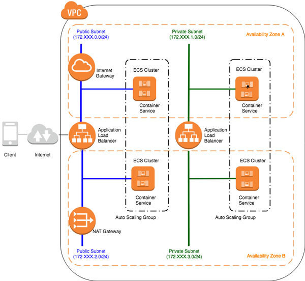

AWS ECS上に構築するSpringアプリケーション#
前提#
以下ページを参考にAPI GatewayとLambdaを使用したspringアプリケーションを作成する。
AWS ECS上に構築するSpringアプリケーション
基本的に、上記のページをトレースするが、学習のため本ページにまとめる。
AWS ECSの概要とアプリケーション環境構成#
「Amazon Elastic Container Service (Amazon ECS)」は、クラスタ単位でDockerコンテナを簡単にスケーラブルかつ高速に実行／停止／管理できるコンテナ管理サービスである。
Linuxサーバ環境でDockerコンテナを単純に運用する場合と比較して、ECSではリージョン内の複数のアベイラビリティゾーンをまたいでコンテナを実行できるため、可用性の高い運用が可能。2019年1月時点では、1つまたは複数のEC2上にクラスタを構築し、その上に任意のレジストリにあるDockerイメージをデプロイする「EC2起動型」と、実行するクラスタ自体をマネージドとしてAWSが自動で管理し、コンテナだけを意識する「Fargate」に分類できる。
本稿では理解を深めるために、EC2クラスタ型でECSアプリケーションを構築するものとし、以下のようなイメージでECSアプリケーションを構築する形式とする。

ECSアプリケーションの構築イメージ#
作業はネットワーク環境の構築からアプリケーションの実装、コンテナイメージの作成、クラスタの実行など広範囲に及ぶので、以下の7つのステップに分けて解説を進めていく。
VPC (Virtual Private Cloud)環境の構築
アプリケーションロードバランサ (ALB)の作成
Springを使用したコンテナアプリケーションの実装方法
Dockerコンテナの作成・DockerHubへのプッシュ
ECSクラスタの作成
ECSタスクの定義
ECSサービスの実行
最初のステップでは、ALBやECSクラスタを配置するための、VPCおよびサブネットを構築する。具体的には、構築するVPC環境において、サブネットはパブリックとプライベートに分割し、可用性を考慮して、複数のアベイラビリティゾーンでECSコンテナが配置されるよう設定する。
サブネットをパブリックとプライベートに分割するのは、AWSではよく行われる構成で、次のような用途で構築される。
パブリックサブネットはインターネットからのアクセスを受け付け、プライベートサブネットはVPC内からの接続のみ許可するようアクセス制御するため
プライベートサブネットでは、DBへの接続や、オンプレミスとのVPNアクセスするサーバを配置し、セキュリティを向上させるため
ブラウザからのリクエストがメインのWebアプリケーションやモバイルアプリケーションなど、クライアントが多様化している昨今、ECSでアプリケーションを構成する場合は、次のような用途で、各サブネットに役割を分けてECSコンテナを配置するユースケースが発生する。
パブリックサブネットにはBackend For Frontend (以下、BFF)として、Webアプリケーション向けのHTMLを生成するサーバなどを配置する
プライベートサブネットのECSコンテナにAPIサーバを配置し、データベース接続などを行う
本連載では、こうしたユースケースを前提とした構成で、ECSアプリケーションを構築していく。なお、モバイル向けなど、シングルページアーキテクチャ(SPA)でアプリケーションを構成する場合、パブリックサブネットにはBFFアプリケーションの代わりに、「Amazon API Gateway」や「AWS AppSync」、「Kong」などのAPI Aggregationミドルウェアを設定する場合もある。2019年1月時点では、「Amazon API Gateway」のバックエンドにプライベートサブネット用のALBを介してECSコンテナを配置する構成はサポートされていないので、そうした構成をとりたい場合は、BFFサーバかKongなどのミドルウェアで代替する。
AWS VPCの設定#
VPCダッシュボードに移動する
メニューの「Services」をクリックし、「VPC」を検索または選択する。
VPCを作成する
VPCダッシュボードの左側のメニューで、「Your VPCs」をクリックする。
「Create VPC」ボタンをクリックする。
必要な情報（Name tag, IPv4 CIDR block等）を入力し、「Create」ボタンをクリックする。
サブネットを作成する
左側のメニューで、「Subnets」をクリックする。
「Create subnet」ボタンをクリックする。
必要な情報（Name tag, VPC, IPv4 CIDR block等）を入力し、「Create」ボタンをクリックする。
インターネットゲートウェイを作成＆アタッチする
左側のメニューで、「Internet Gateways」をクリックする。
「Create internet gateway」ボタンをクリックする。
必要な情報（Name tag等）を入力し、「Create」ボタンをクリックする。
作成したインターネットゲートウェイを選択し、「Actions」ドロップダウンから「Attach to VPC」を選択し、対象のVPCを選択する。
ルートテーブルを設定する
左側のメニューで、「Route Tables」をクリックする。
新たにルートテーブルを作成するか、既存のルートテーブルを選択する。
「Routes」タブを選択し、「Edit routes」をクリックする。
「Add route」をクリックし、Destinationには0.0.0.0/0、Targetには作成したインターネットゲートウェイを選択する。「Save routes」をクリックする。
「Subnet Associations」タブを選択し、「Edit subnet associations」をクリックする。作成したサブネットを選択し、「Save」をクリックする。
以上の手順に従って、AWS VPCの設定を行うことができる。
パラメータ名 |
説明 |
|---|---|
Name tag |
作成するVPCや他のAWSリソース（サブネット、インターネットゲートウェイなど）に付ける名称。リソースを一意に識別するために使用する。 |
IPv4 CIDR block |
VPC内のプライベートIPv4アドレス範囲を示す。CIDR表記法（例: |
VPC |
サブネットやインターネットゲートウェイを関連付けるためのVPC。これらのリソースは作成時に特定のVPCに関連付けられる。 |
Destination |
ルートテーブルに追加するルートの対象となるIPアドレス範囲。0.0.0.0/0を指定することで、すべてのIPアドレス範囲を表すことができる。 |
Target |
ルートテーブルに追加するルートのターゲット。インターネットゲートウェイやNATゲートウェイなどのリソースを指定する。 |
AWS ALBの設定手順#
AWS Management Consoleにログインし、「EC2」を選択する。
EC2ダッシュボードで、「Load Balancers」を選択する。
「Create Load Balancer」をクリックする。
「Load Balancer Type」で「Application Load Balancer」を選択し、「Create」をクリックする。
「Configure Load Balancer」セクションで以下の設定を行う：
「Load Balancer name」に適切な名前を入力する。
「Scheme」でパブリックまたはインターナルのどちらかを選択する。
「Listeners」セクションで、必要なポートとプロトコルを指定する。
「Availability Zones」セクションで、ALBを配置するアベイラビリティーゾーンを選択する。
「Security settings」セクションで、必要なセキュリティグループを選択する。
「Configure Routing」セクションで以下の設定を行う：
「Target group」で新しいターゲットグループを作成するか、既存のターゲットグループを選択する。
必要に応じて「Path-based routing」や「Host-based routing」を構成する。
「Register Targets」セクションで、ターゲットグループにターゲット（インスタンス、コンテナなど）を登録する。
「Review」セクションで設定内容を確認し、「Create」をクリックする。
ALBが作成されたら、必要に応じてDNS名を使用してアプリケーションにアクセスできることを確認する。
以上で、AWS Management Consoleを使用してALBの設定が完了する。設定内容に応じてALBがトラフィックを受け取り、ターゲットグループに転送するように構成される。
パラメータ名 |
説明 |
|---|---|
Name |
作成するALBの名称。この名前は、AWS内で一意でなければならない。 |
Scheme |
ALBの公開範囲を指定する。 |
Listeners |
ALBが接続要求を受け入れるためのポートとプロトコルを指定する。HTTPおよびHTTPSが選択可能である。 |
Availability Zones |
ALBを配置するVPC内のAvailability Zoneと、それぞれに関連付けられるサブネットを指定する。 |
Security groups |
ALBに関連付けるセキュリティグループを指定する。これにより、ALBへのインバウンドトラフィックの許可/拒否を制御する。 |
Target group |
ALBがトラフィックをルーティングする対象の一覧。このグループには、リクエストを処理するEC2インスタンスなどが含まれる。 |
Health checks |
ALBがターゲットグループのヘルスチェックを実行するための設定。例えば、チェックするパスや、成功と判定するHTTPステータスコードなどを設定する。 |
Springを使用したコンテナアプリケーションの実装方法#
pom.xmlの設定#
プライベートサブネット(Backend)アプリケーションのpom.xml
<dependencies>
<dependency>
<groupId>org.springframework.boot</groupId>
<artifactId>spring-boot-starter-web</artifactId>
</dependency>
</dependencies>
パブリックサブネット(BFF)アプリケーションのpom.xml
<<dependencies>
<dependency>
<groupId>org.springframework.boot</groupId>
<artifactId>spring-boot-starter-web</artifactId>
</dependency>
<dependency>
<groupId>org.springframework.boot</groupId>
<artifactId>spring-boot-starter-thymeleaf</artifactId>
</dependency>
<dependency>
<groupId>org.springframework.boot</groupId>
<artifactId>spring-boot-configuration-processor</artifactId>
<optional>true</optional>
</dependency>
</dependencies>
org.springframework.boot:spring-boot-starter-web この依存関係は、Spring BootによるWebアプリケーションの開発をサポートします。この依存関係を追加することで、Spring MVCなどのWebフレームワークを使用することが可能になる。
org.springframework.boot:spring-boot-starter-thymeleaf Thymeleafというテンプレートエンジンを使用するための依存関係です。Thymeleafは、HTMLテンプレートを処理し、動的なコンテンツを生成するための強力なツール。
org.springframework.boot:spring-boot-configuration-processor (オプション) Spring Bootの構成情報を処理するためのオプションの依存関係です。この依存関係を追加すると、アプリケーションの構成ファイルをより簡単に読み込み、解析することができる。
アプリケーションの実装(backend)#
Backendアプリケーションのリクエストを受け付けるControllerクラス プライベートサブネットでバックエンドAPIサーバとして、「/api/v1/users」というURLのパスでリクエストを受け取り、ユーザのリストを返却する簡単なアプリケーションを作成する。
package org.debugroom.mynavi.sample.ecs.backend.app.web;
import org.debugroom.mynavi.sample.ecs.backend.app.model.User;
import org.springframework.web.bind.annotation.GetMapping;
import org.springframework.web.bind.annotation.RequestMapping;
import org.springframework.web.bind.annotation.RestController;
@RestController
@RequestMapping("/api/v1")
public class BackendRestController {
@GetMapping("/users")
public List<User> getUsers(){
List<User> users = new ArrayList<>();
users.add(User.builder().userId("1").userName("Taro").build());
users.add(User.builder().userId("2").userName("Jiro").build());
return users;
}
}
BackendアプリケーションのSpirngBoot起動クラス
package org.debugroom.mynavi.sample.ecs.backend.config;
import org.springframework.boot.SpringApplication;
import org.springframework.boot.autoconfigure.SpringBootApplication;
import org.springframework.context.annotation.ComponentScan;
@SpringBootApplication
public class App {
public static void main(String[] args) {
SpringApplication.run(App.class, args);
}
}
BackendアプリケーションのWebMVC設定クラス
package org.debugroom.mynavi.sample.ecs.backend.config;
import org.springframework.context.annotation.ComponentScan;
import org.springframework.context.annotation.Configuration;
import org.springframework.web.servlet.config.annotation.WebMvcConfigurer;
@Configuration
@ComponentScan("org.debugroom.mynavi.sample.ecs.backend.app.web")
public class MvcConfig implements WebMvcConfigurer {
}
application.yml
applicaiton.yml
server:
servlet:
context-path: /backend
アプリケーションの実装(bff)#
bffアプリケーションのリクエストを受け付けるControllerクラス
package org.debugroom.mynavi.sample.ecs.backendforfrontend.app.web;
import org.springframework.beans.factory.annotation.Autowired;
import org.springframework.stereotype.Controller;
import org.springframework.ui.Model;
import org.springframework.web.bind.annotation.RequestMapping;
import org.springframework.web.bind.annotation.RequestMethod;
import org.springframework.web.client.RestOperations;
@Controller
public class BackendForFrontendController {
@Autowired
RestOperations restOperations;
@RequestMapping(method = RequestMethod.GET, value = "users")
public String getUsers(Model model){
String service = "/backend/api/v1/users";
model.addAttribute("users",
restOperations.getForObject(service, User[].class));
return "users";
}
}
Dockerコンテナ#
Backendアプリケーションのプロジェクトに作成するDockerfile
# Dockerfile for sample service using embedded tomcat server
# セキュリティと安定性のため、CentOS 7をベースにします
FROM centos:centos7
# メンテナの情報を記載します
MAINTAINER debugroom
# 必要なパッケージをインストールします: OpenJDK, wget, tar, iproute, git
RUN yum install -y \
java-1.8.0-openjdk \
java-1.8.0-openjdk-devel \
wget tar iproute git
# Apache Mavenをインストールするためのレポジトリを追加します
RUN wget http://repos.fedorapeople.org/repos/dchen/apache-maven/epel-apache-maven.repo -O /etc/yum.repos.d/epel-apache-maven.repo
# レポジトリの設定を調整します
RUN sed -i s/\$releasever/6/g /etc/yum.repos.d/epel-apache-maven.repo
# Apache Mavenをインストールします
RUN yum install -y apache-maven
# 環境変数JAVA_HOMEを設定します
ENV JAVA_HOME /etc/alternatives/jre
# サンプルアプリケーションをcloneします
RUN git clone https://github.com/taiyakiyasan/tutorial-aws-ecs-app.git /var/local/mynavi-sample-aws-ecs
# pom.xmlを使ってMavenのインストールを行います
RUN mvn install -f /var/local/mynavi-sample-aws-ecs/pom.xml
# システムの時間設定を退避します
RUN cp /etc/localtime /etc/localtime.org
# システムのタイムゾーンを日本（Asia/Tokyo）に設定します
RUN ln -sf /usr/share/zoneinfo/Asia/Tokyo /etc/localtime
# ポート8080を公開します
EXPOSE 8080
# 起動コマンドを設定します。ここではJavaのjarファイルを実行します
CMD java -jar -Dspring.profiles.active=production /var/local/mynavi-sample-aws-ecs/backend/target/mynavi-sample-aws-ecs-backend-0.0.1-SNAPSHOT.jar